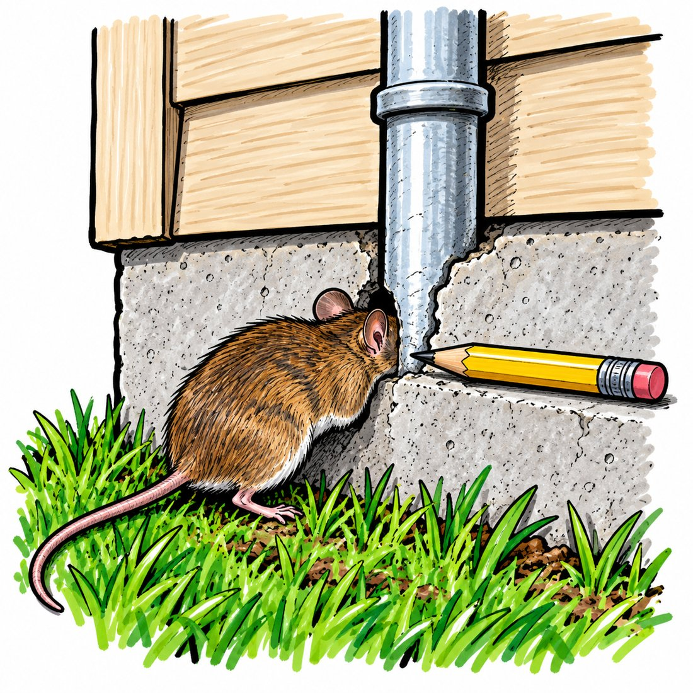

The idea in plain words
A house mouse fits through a hole a quarter inch across, the width of a pencil. The fix, straight from the Centers for Disease Control, is to pack that gap with coarse steel wool and caulk over it.
Mice chew through plastic screening, rubber, vinyl, expanding foam, and wood. Chewing works on a solid that holds still. Steel wool is a loose tangle of thousands of thin, sharp shavings. Bite into it and nothing holds still: the bundle gives and springs back, so the tooth has nothing to grip. The caulk does no blocking on its own. It just holds the wool where you put it.
The pencil test: if a pencil goes into the gap, a mouse can too.

The gap is usually around the pipe, not the pipe itself.
Mouse numbers that matter
1/4 inchThe gap a house mouse squeezes under. They also fit through an opening 3/8 of an inch wide.
12 inchesHow high they jump straight up from the floor. They also climb any rough wall and run along wires. A roofline gap is as good as a foundation gap.
30 feetHouse mice seldom travel farther than this from the nest and the food. Keep that in mind when you set traps.
5 to 6 weeksAge when a female can breed. She can have 5 to 10 litters a year, with 5 or 6 pups in each.
21 millionUnited States homes invaded by rodents each winter, per the National Pest Management Association.
What it costs
about $5A 12 pad pack of steel wool.
about $10The steel wool plus a tube of caulk.
$40 to $80A full job with copper mesh for wet gaps, metal patches for big holes, and traps.
$150 to $550One exterminator visit. Cost guides put a typical mouse job around $350, follow up visits at $75 to $125 each, and sealing is often billed separately.
Trapping clears the mice inside. The open gap lets the next one in. A California pest note calls exclusion the most successful and permanent form of house mouse control.